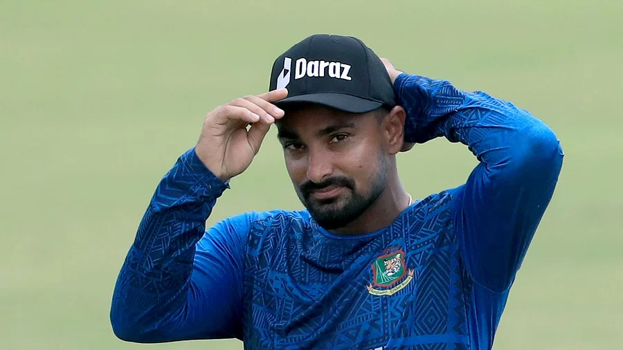

রোববার, ২৭ আগস্ট ২০২৩
প্রকাশ: ২৭ আগস্ট ২০২৩, ১২: ৩৬
জ্বরে আক্রান্ত জাতীয় দলের ক্রিকেটার লিটন দাস ছবি: শামসুল হক
জ্বরে আক্রান্ত জাতীয় দলের ক্রিকেটার লিটন দাস। তাঁকে ছাড়াই আজ দুপুরে শ্রীলঙ্কার বিমান ধরবে বাংলাদেশ দল। সুস্থ হলে দলের সঙ্গে যোগ দেবেন এই উইকেটকিপার ব্যাটসম্যান। সেটা হতে পারে আগামীকাল।
বিসিবির চিকিৎসক দেবাশীষ চৌধুরী আজ প্রথম আলোকে বলেন, ‘লিটনের জ্বর। তবে সেটা খুব গুরুতর কিছু নয়। সব টেস্টের রেজাল্ট ভালোই এসেছে। সুস্থ হলেই দলের সঙ্গে যোগ দেবে।’
এদিকে আজ দেশ ছাড়ার আগে সবার কাছে দোয়া চেয়েছেন জাতীয় দলের পেসার তাসকিন আহমেদ। হজরত শাহজালাল আন্তর্জাতিক বিমানবন্দরে সাংবাদিকের এক প্রশ্নের জবাবে দলীয় লক্ষ্যের কথা জানাতে গিয়ে তিনি বলেছেন, ‘আমাদের প্রধান লক্ষ্য এশিয়া কাপের ফাইনাল খেলা। দলগতভাবে বড় সাফল্য হবে, যদি আমরা এশিয়া কাপের ফাইনালে যেতে পারি।’

আজ দুপুরে শ্রীলঙ্কার বিমান ধরবে বাংলাদেশ দল ছবি: ইনস্টাগ্রাম
বছরটা ওয়ানডে বিশ্বকাপের। অক্টোবর-নভেম্বরে ভারতে হতে যাওয়া বিশ্বকাপের আগে এশিয়া কাপে ভালো খেলা যেকোনো দলের জন্য গুরুত্বপূর্ণ। বাংলাদেশও ব্যতিক্রম নয়।
তাসকিন আরও বলেন, ‘চ্যাম্পিয়ন হওয়ার ইচ্ছা তো অবশ্যই আছে। মূল জিনিসটা হচ্ছে, ভালো ক্রিকেট খেলা। সামনে যেহেতু বিশ্বকাপও আছে। সবাই সবার সেরাটা খেললে চ্যাম্পিয়ন হওয়াও সম্ভব। দোয়া করবেন, সবাই যেন নিজেদের সেরা ক্রিকেট খেলতে পারি।’
আরও দেখুন.......
এশিয়া কাপ ক্রিকেট লিটন দাস
প্রথম আলো প্রধান কার্যালয়:-
১৯ কারওয়ান বাজার, ঢাকা ১২১৫, বাংলাদেশ।
© MD SHAKWAT HOSSEN ALL RIGHT RESERVED